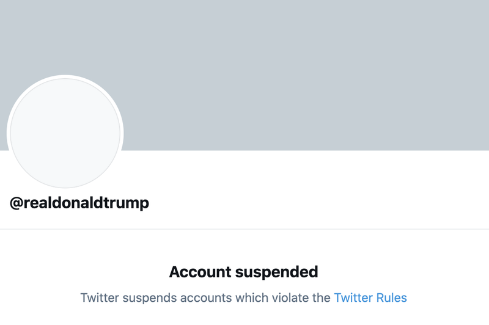

O Twitterovom suspendiranju Trumpovog profila

Kratki intervju za Novosti o ukidanju Trumpovih profila na Twitteru i drugim društvenim mrežama. Intevjuirala Mašenjka Bačić. Objavljen pod naslovom “Društvene mreže treba regulirati”.
S jedne strane nalaze se oni koji smatraju da su društvene platforme zakasnile u ukidanju Trumpovih profila te da su mu podilazile zbog toga jer je predsjednik, a s druge oni koji smatraju da se time ugrožava sloboda govora. Na kojoj ste Vi poziciji?
Iz Twitterovog objašnjenja trajno ukidanje Turmpovog privatnog profila izgleda upitno. Mogao nastaviti brisati tweetove ili stavljati upozorenja uz njih. To je u prethodnim situacijama rezultiralo znatno smanjenom diseminacijom takvih poruka. Trump je dosada imao mnoštvo objava koje su implicite zazivali nasilje. Zbog otvorenih laži, mizoginije i rasizma mogao je biti benan i ranije, ali Twitter javne figure izuzima od nekih pravila koja vrijede za ostale.
To benanje jest, doduše, simboličko dovršenje političkog samoubojstva kojeg je Trump sam počinio. Ono je došlo u času kada je svima jasno da Trump izgubio poluge vladanja i da više ne zapovijeda niti najbližim suradnicima, što je u političkim sustavima situacija vakuuma vlasti. Šok 6.1. za političku javnosti u SAD-u bio je golem: dogodila se transgresija koja je ugrozila proces prijenosa vlasti, iako realno bez potencijala za državni udar – upravo jer je glavni nositelj vlasti u tom trenutku izgubio sve poluge vlasti. Tim potezom Twitter je nešto i riskirao, nepovjerenje kod zagovornika slobodnog govora pa čak i zagovornika uvjetovanog slobodnog govora poput mene, ali očigledno je moment i promjena općeg raspoloženja prelomila stvar.
Koliko su društvene mreže kao alat zaslužne za stvaranje atmosfere koja je dovela do upada rulje u Kongres te bi li bilo razlike da su društvene mreže puno ranije ukinule Trumpov profil?
Bez društvenih mreža Alt-Right, QAnon, Proud Boys ili Boogaloo Bois svakako ne bi dobili prodor u mainstream. Društvene mreže važan su alat vidljivosti i koordinacije pokreta, pogotovo u disperznom političkom prostoru, pa tako i na desnici. Treba prepoznati da je okupljanje na Capitolu bila prilika, možda i zadnja, da ti pokreti i njegovi akteri osiguraju svoju političku i medijsku relevantnost i nakon Trumpovog odlaska. Treba i njih vidjeti kao političke aktere.
Međutim, društvene mreže i drugi kanali masovne diseminacije poput WhatsAppa svakako mogu biti informacijska spirala koje ljude gurne u spremnost i situacije nasilja, pogotovo kad u pozadini djeluju strukturne forme ekonomskog, etničkog, patrijahalnog, rasističkog naislja. Stoga su se društvene mreže našle pritisnute da reguliraju širenje dezinformacija, manipulacija i poziva na nasilje, te da informacije kontekstualiziraju i učine kompleksnijima, što je tek djelomično uspješno dijelom zbog nedovoljnog ulaganja u takvu provjeru, a i dijelom zbog toga što više reklama mogu prikazati kad je informacija kraća i fragmentiranije pa smo prisiljeni više skrolati.
Ukidanje Trumpovog računa na Twitteru, Facebooku i drugim platformama otvorilo je još jedno pitanje – moć društvenih mreža kao javnog prostora kojeg za razliku od tradicionalnih medija reguliraju njihovi vlasnici čiji je cilj isključivo profit. Postoji li potreba za zakonskom regulacijom društvenih mreža te je li ona moguća?
Bitno je istaknuti da nije samo Trump taj nego i čitava politička scena koji koriste Twitter kako bi izbjegli medijsku trijažu. Pobuda i prilika da se bude vlastiti medij i medijima nameće diskusija nisu u naravi drugačije od pobuda i prilika alt-right ekipe. Društvene mreže naravno imaju monetarnu korist od masovnosti, Twitter od toga da ga se vidi kao pozornicu “službenog političkog govora”. Uostalom, masa nas korisnika društvenih mreža djelujemo kao da smo svoj medij. Time su mediji izgubili svoj monopol na oblikovanje javnog govora, premda ni tradicionalni i novi komercijalni mediji nisu u ekonomskom pogledu drugačiji. I društvene mreže i komercijalni mediji se bore za iste reklamne pare, za istu ekonomiju pažnje, za isti clickstream.
Privatna poduzeća nisu nužno politički neutralna. Dapače, čitave frakcije kapitala direktno ovise o vlastitoj političkoj orijentaciji. U SAD-u su te tendencije nešto jasnije, jer para ima veću ulogu no u drugim demokratskim sustavima. Zoran primjer su proizvođači oružja ili naftna industrija i Republikanci. Ne iznenađuje da nakon četiri godine Trumpove vladavine big tech, koji se uglavnom nalazi na suprotnoj strani političkog spektra u SAD-u, koristi pravila koja je morao izraditi pod pritiskom javnosti i pravne odgovornosti da bi ga konačno ušutkao. Opredijeljenost big techa, uostalom, vidi se iz činjenice da je Twitter na isti dan kad i Trumpov, suspendirao i profil Sciencea Huba, najvećeg piratskog repozitorija znanstvenih članaka o kojem praktički ovisi globalna dostupnost znanosti izvan bogatih institucija globalnog sjevera.
Twitter i FB su platforme javne komunikacije (iako dijelom zatvoreni sustavi), pa je pitanje njihove infrastrukturne uloge spram javne sfere i prava javnog govora, no kako su to privatne firme same postavljaju pravila komunikacije unutar zakonskih dopuštenja. Djelomično je to problem monopola. Međutim, u mrežnim komunikacijama je gotovo neizbježan zbog tzv. mrežnog učinka: komunikacijska mreža je tim korisnija za svakog njenog sudionika što je više sudionika komunikacije. A i a oligopol temeljna karakteristika razvijenog kapitalizma. Može se reći da su FB i Twitter konkurenti u istom tržištu, pa su ipak obje mreže benale Trumpa. Potencijalno problematičnije od benanja Trumpa je benanje Parlera na Appleovim i Googleovim aplikacijskih platformama, jer bi Parler trebao regulirati pravosudni sustav.
Rješenje je kompleksno: regulacijom prisiliti društvene mreže da znatno više ulažu u provjeravanje, kontekstualiziranje i obogaćivanje informacija, spriječiti ih u izbjegavanju poreza, od tih sredstava znatno više ulagati učenje za snalaženje u informacijskoj kompleksnosti te pluralizaciju i dekomercijalizacija medijskog prostora. Naposlijetku, možda te monopole možda i razbiti ili pretvoriti u javni servis koji bi bez pritiska reklama mogao imati i kvalitetnije sučeje i bolje služiti smislenom informiranju.